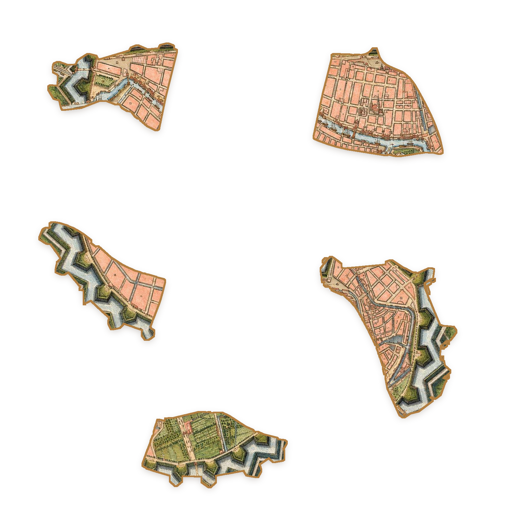
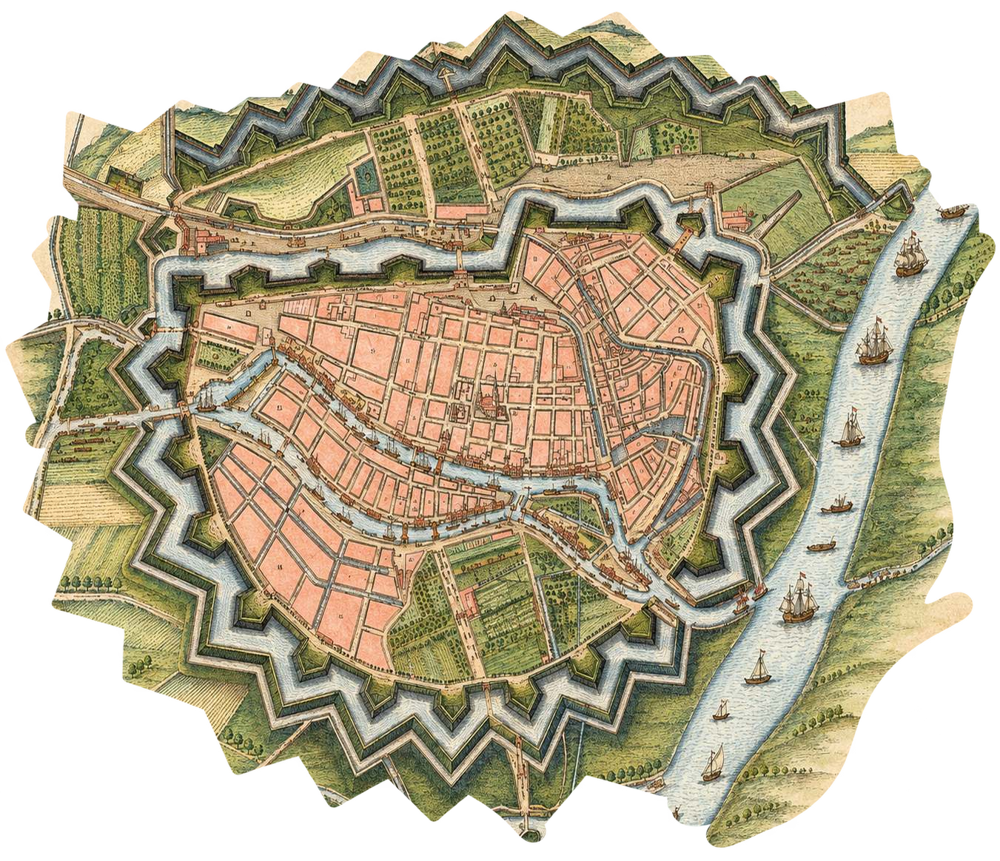

Што захавана
Існыя формы пяці фрагментаў, кропкі стыкоўкі, маршруты, медальёны навігацыі, панарама і рэкламная зона. Малюнак не з'яўляецца дакладнай архіўнай копіяй і не пацвярджае гістарычнае становішча ўсіх аб’ектаў. Новых знакаў славутасцяў на карту не дадавалі.
Кіраванне без перацягвання
| Каманда | Дзеянне |
|---|---|
| Tab | Пераход паміж часткамі карты |
| Enter / Space | Адкрыць раздзел або падсвятліць «Хутка» |
| ← ↑ ↓ → | Перасунуць частку ці злучаную групу |
| S | Стыкаваць з суседам |
| Escape | Адмяніць апошні рух |
Для TalkBack і VoiceOver у натыўным кампаненце дададзены такія ж дзеянні, уключаючы інфармацыю пра колькасць злучаных частак.
Гэта дызайн-агляд PNG, не скрыншот Android/iOS і не доказ праверкі на фізічнай прыладзе. Клавіятурная інтэрактыўнасць у гэтым HTML не эмітуецца.